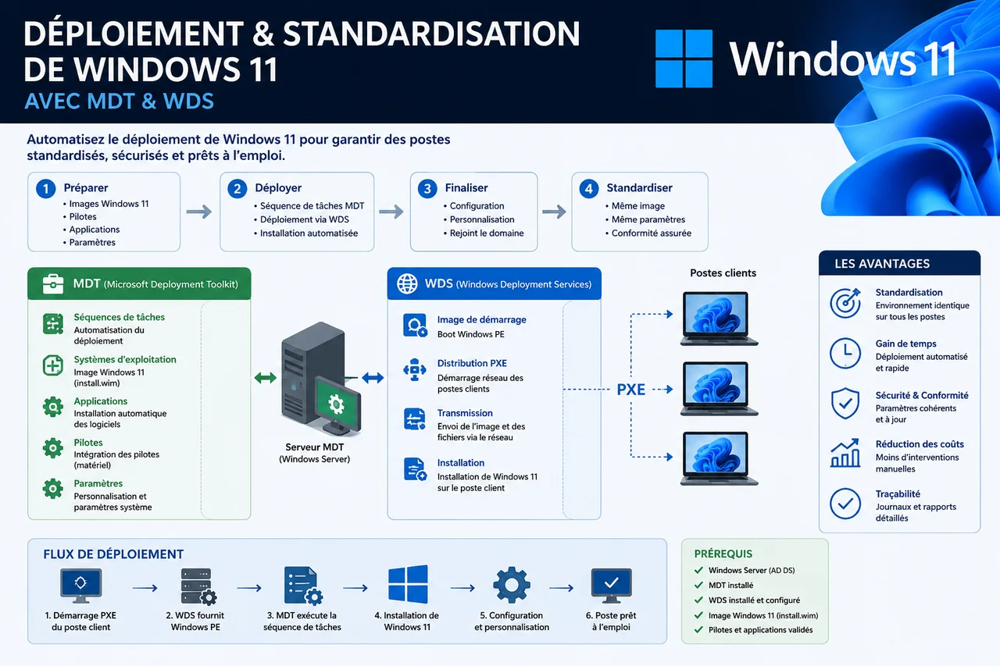

Despliegue y estandarización — DSDEN 56
Homogeneización y seguridad de un parque informático heterogéneo mediante un proceso estructurado: preparación, automatización, pruebas, despliegue masivo y documentación.
Resultado: puestos más estables, despliegue más rápido y procedimiento reutilizable por el equipo informático.